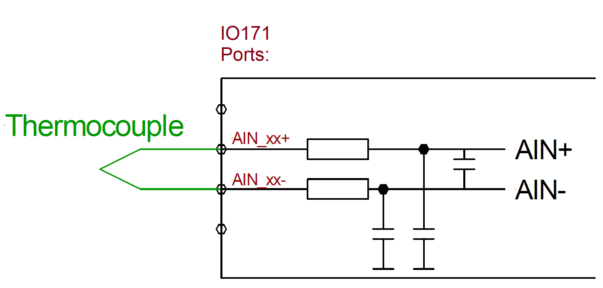
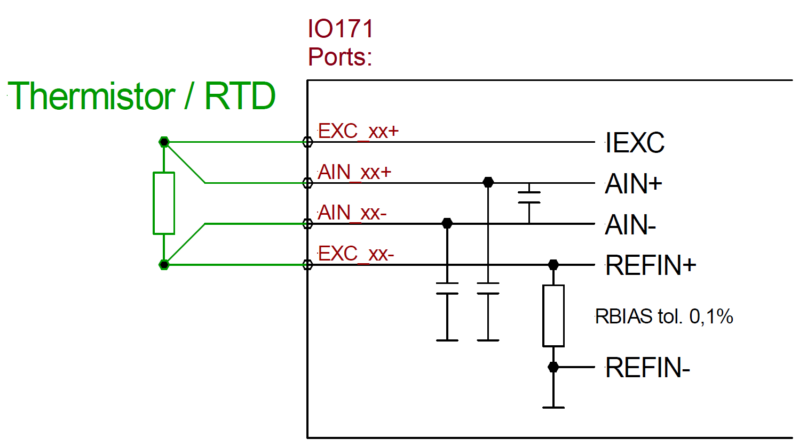
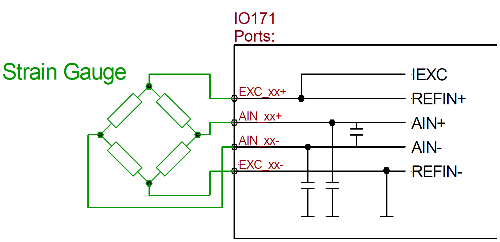
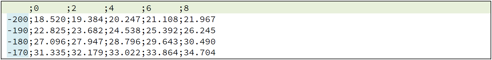
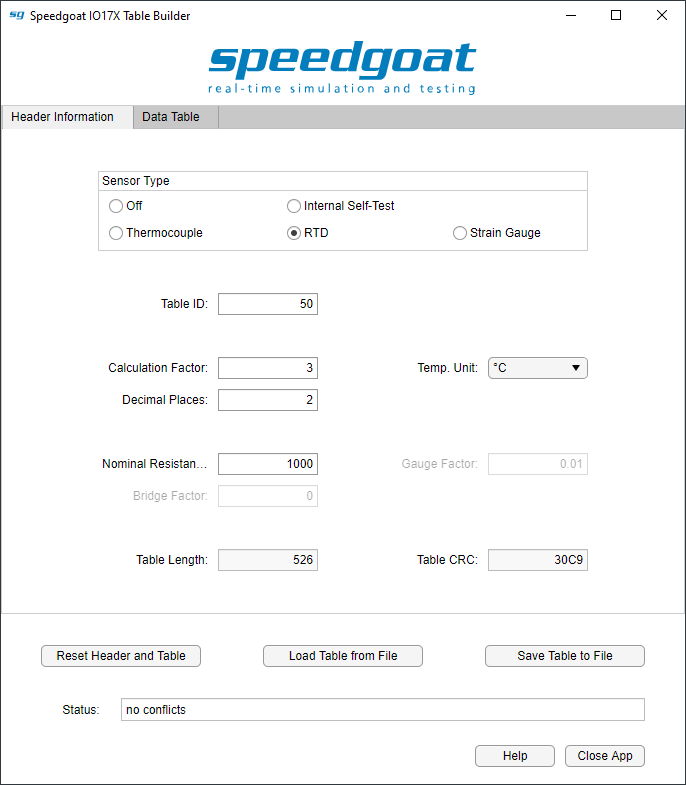
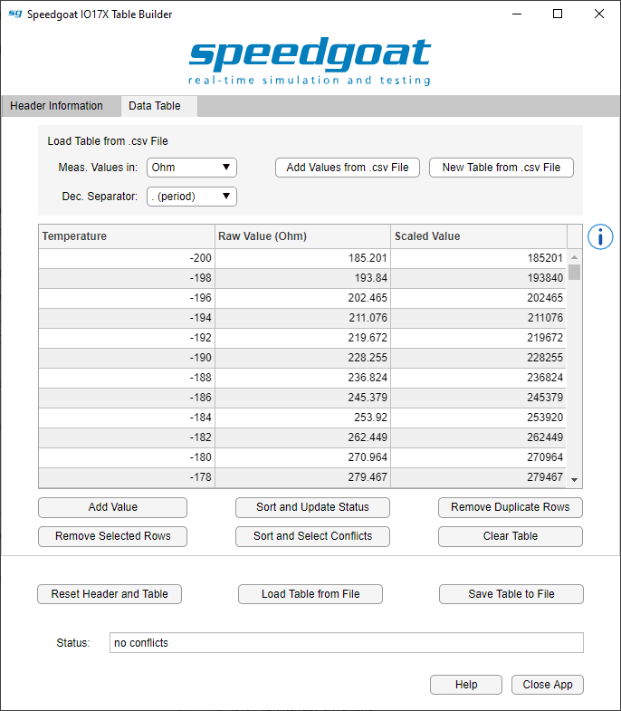

IO17x Usage Notes
IO17x Usage Notes — Usage information about the I/O modules
Description
The section contains information about how to use the IO171 and IO172 I/O modules to measure thermocouples, RTDs / Thermistors, and strain gauges
General note on the connection of sensors
The configuration of the sensors connected to the IO17x module should remain unchanged when loading and running the Simulink model. This is due to the sensor calibration steps that are performed when the model is loaded. Hot-swapping channels during runtime can lead to unexpected behavior and is strongly discouraged.
Measurement duration
Total conversion time (independent on the number of active channels):
Thermocouple: 22 ms
RTD: 22 ms
Strain gauge: 74 ms
![[Note]](images/note.png) | Note |
|---|---|
Using a sample time shorter than the conversion time will cause the output ports to retain the previous value until the next sensor reading is available. To ensure that new sensor readings are available at each sample step, the sample time of the IO17x Analog Input block must be set greater than the total conversion time. |
Thermocouple measurement
Thermocouples do not need any external excitation and can be wired as follows:

To interpret the measurement of a thermocouple correctly, the temperature at the point where the thermocouple cabling material connects to a different cabling material (e.g. copper) has to be known. This point is called cold junction.
For the Cold Junction Compensation three options are available:
Analog channel X: A second channel can be configured for cold junction measurement. The respective channel must be separately configured, for example as RTD.
External Sensor: Use any external SE95 temperature sensor connected over the I2C interface (SDA/SCL). When using the IO17x Terminal Boxes, this setting (recommended) refers to the SE95 sensor integrated into the sensor terminal.
On board Sensor: The on board I2C (SE95) temperature sensor of the IO171/IO172 is used. Because the module is likely to have a different temperature than the point where the thermocouple connects to e.g. copper, this setting is not recommended for accurate measurements.
The cold junction compensation measurement method is set up individually for each channel.
Thermistors/ RTDs

RTD/Thermistors are measured ratiometrically. The excitation current flowing through the sensor is also flowing through the known high precision resistor RBIAS. The voltage over RBIAS is then used as the reference voltage for the measurement. As a result, fluctuations in the excitation are canceled out. This wiring scheme is known as 4-wire installation.
For RTDs, the excitation current is fixed to 200 μA, RBIAS is 5.6 kOhm, and the resistance range is 0-5.6 kOhm. To use a custom RTD exceeding the maximum range some resistors can be added in parallel and/or in series to its RTD in order to shift its R vs T characteristic to fit the range. If in the lookup table there is a value exceeding 5.6 kOhm then the excitation current for that channel is not enabled and the measurement will fail.
Strain gauges
Strain gauges are best measured ratiometrically; the voltage drop across the bridge is used as the reference voltage. The IO171 and IO172 support any type of strain gauge (in quarter, half and full bridge configuration, measured in microstrain), however, they do not offer a bridge completion circuit. Therefore, if quarter or half bridges are used, these have to be completed outside of the module. Strain gauges connected to the IO171 or IO172 are excited with current, which is automatically set up according to the sensor table. The maximum excitation current of the IO171/IO172 is 2 mA, however, so higher impedance sensors will get better reading results. The best gain is also set up automatically.

There are no factory supplied tables for strain gauges due to the large variation in gauge factors that common strain gauges have. It is very simple to generate a user-defined table because strain gauges do not need any data area. The calculation is done based on the gauge factor, maximum strain and the nominal resistance.
Table Concept
The IO171 and IO172 measure voltages from thermocouples, from RTDs or from strain gauges. These voltages have to be translated into temperatures and strain in some way, depending on the specific Sensor Type. The IO171 and IO172 use tables to translate from a measured value to a corresponding temperature or strain value. Each channel is configured through an individual table, but tables may also be used for more than one channel.
These tables are divided into a header area and a data area. The header contains metadata like the sensor type, table length, calculation factor for the measurement values and other important information about the connected sensor. Strain gauges, for example, need to have a gauge factor included, a nominal resistance and a maximum strain. RTDs on the other hand only need the nominal resistance, while thermocouples do not need any of this information.
Table Builder
The Speedgoat "IO17x Table Builder" is a small, helpful software tool that can be used to build the tables for the IO171 and IO172 I/O modules. It is available as part of the Speedgoat I/O Blockset. The table builder application interface has two main tabs, one for the header information, and one for the table data. In the header information tab, all settings related to the sensor may be easily set up.
| Note |
|---|---|
Hover the mouse cursor over a parameter field inside the application to display tooltip information explaining the usage of the parameter. |
In the data area panel, the measured values and the corresponding data values are entered one by one or loaded from a CSV file. The builder automatically calculates the table length and the correct CRC (cyclic redundancy check) value for a table. The builder also implements several checks to ensure a correct table.
The header area can be completely set up with the builder, but the data area is more conveniently prepared with a CSV file provided by the manufacturer of the sensor. The layout of the CSV file needs to be similar to this:

The first column contains the temperature (or other) values and the first row defines the step sizes starting from the temperature value in the first column. All other values are the corresponding measured values (corresponding to temperature value + step size). Alternatively, a CSV format with no header row and only two columns can be used (temperature and corresponding measured value). In the example above, the leftmost measured value in the second row (18,520) is translated to a temperature of -200°C. The rightmost measured value in the last row (34,704) is translated to a temperature of -162°C. The decimal separator is configurable between "." and ",". The unit of the measured values is also configurable, but the actual units are dependent on the sensor type (e.g. mV, V, mOhm, Ohm). Up to 680 data pairs can be added to the table.
| Note |
|---|---|
If the value measured by the sensor is not in the defined range of the table data, the driver block outputs the first or the last defined value. If the value measured by the sensor is between two defined data points, the driver block uses linear interpolation to calculate the output value. |
One example (of a PT100) is shown in the screen shots below:


When the user hits the "Save Table to File" button, a .HEX file is generated. This file will be required by the Simulink Setup block dialog in order to load it to the IO171 or IO172 module.